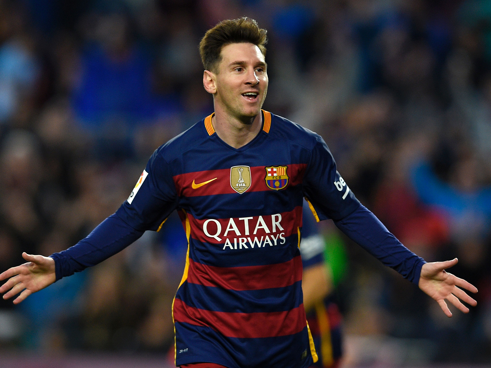
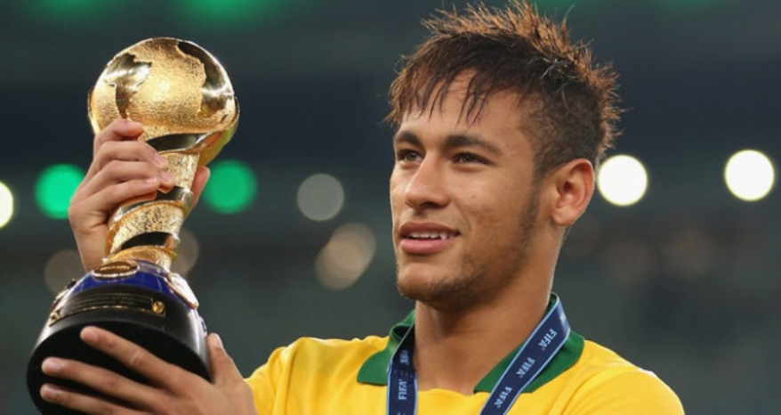
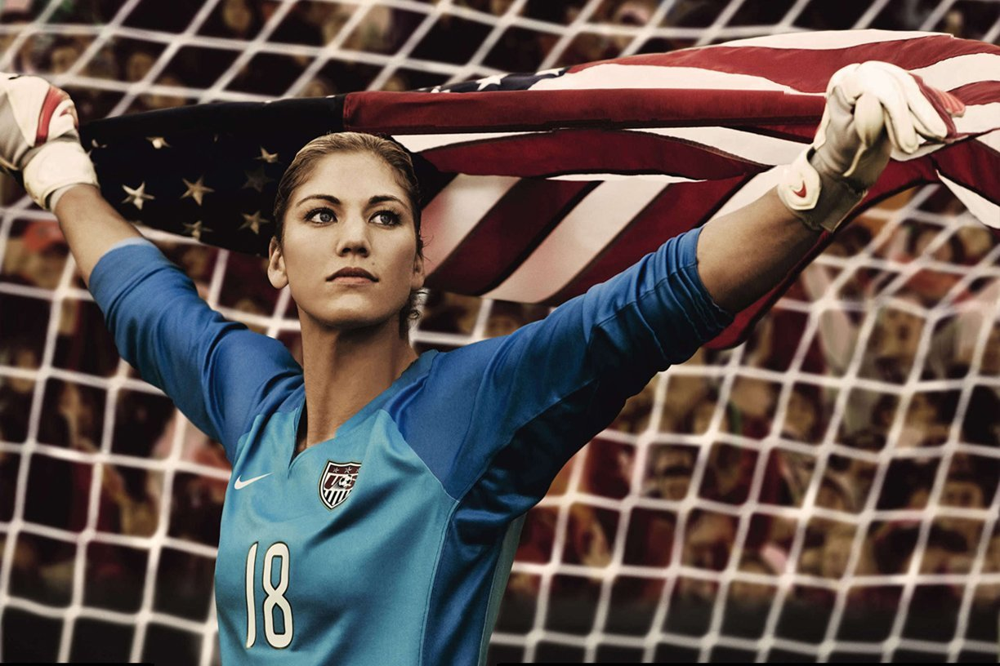
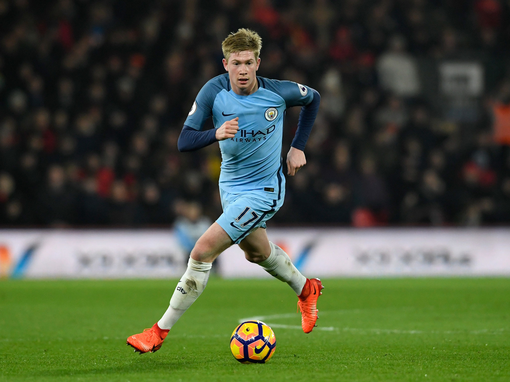
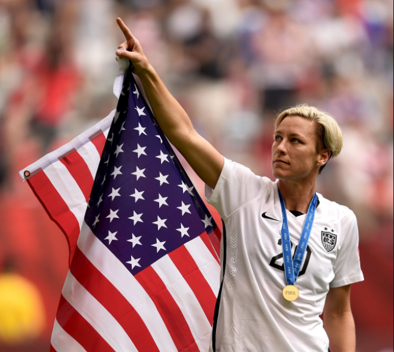
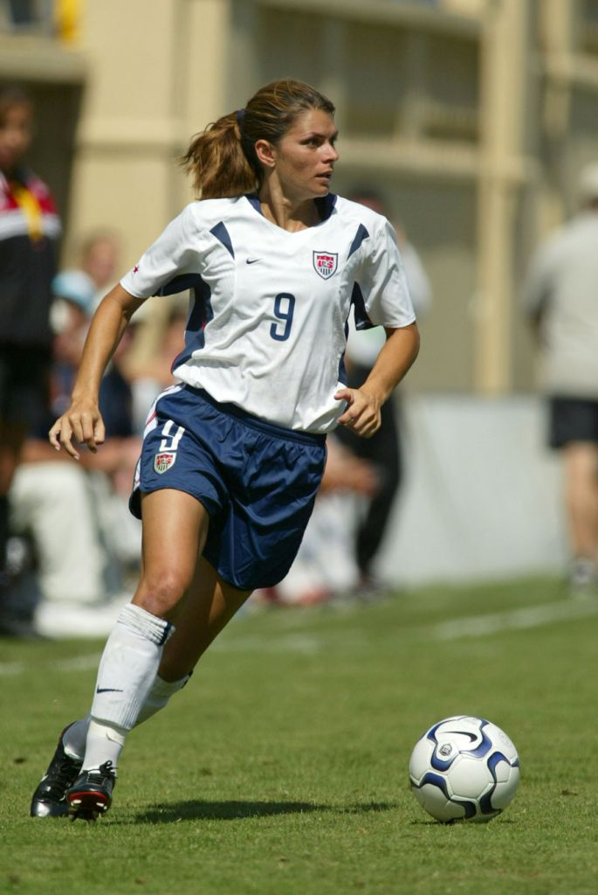

PLAYERS
Go to the Bottom
Lionel Messi

- He makes around 40 million EUR a year.
- He was born on June 24, 1987, in Rosario, Argentina. (He is now 30.)
- He is 1.7 meters tall.
- He plays forwards for Spanish Club FC Barcelona and the Argentina national team.
- In 2015, he was Barcelona's all-time top-scorer with 555 goals in all competitions.
Cristiano Ronaldo
- He makes around 32 million EUR a year.
- Cristiano Ronaldo has the most goals scored in the FIFA Club World Cup.
- He is from Portugal and is a Portuguese professional soccer player.
- He was born on February 5, 1985, in Funchal, Portugal. (He is now 32.)
- He is 1.85 meters tall.
Neymar da Silva Santos Júnior

- He makes a lot less than Ronaldo and Messi, only 9.18 million EUR a year.
- He was born on February 5, 1992, in Mogi das Cruzes, São Paulo, Brazil. (He is now 25.)
- He is 1.75 meters tall.
Hope Solo

- She is an American Soccer Goalkeeper, two-time Olympic Gold Medalist, and a World Cup Champion.
- She was born on July 30, 1981, in Richland Washington, United States. (She is now 36)
- She is 1.75 meters tall.
- She makes 65,000 USD a year just playing soccer.
Kevin De Bruyne

- Kevin plays mainly as an attacking midfielder but can also play as a winger or second striker.
- He is often described as one of the best modern-day advanced players due to his technique, wide range of passing, and long-range shooting skills.
- He makes 6 million EUR a year, but that is expected to increase by almost double in 2018.
- He is 1.81 meters tall.
Abby Wambach

- Her full name is Abby Wambach, and she is a retired American soccer player, two-time Olympic gold medalist, and the FIFA Women’s World Cup champion.
- She was born on June 2, 1980, in Rochester, New York, United States. (She is now 37.)
- She has the most international goals scored (184) among the women’s association football players.
- She played on the same team as Hope Solo.

Mia Hamm
- Her full name is Mariel Margaret Hamm-Garciaparra.
I am a member of a team, and I rely on the team, I defer to it and sacrifice for it, because of the team, not the individual, is the ultimate champion.
- MiaFailure happens all the time. It happens every day in practice. What makes you better is how you react to it.
- Mia I am building a fire, and every day I train, I add more fuel. At just the right moment, I light the match.
- Mia (Click here for more quotes by Mia Hamm.)-
Back to the Top